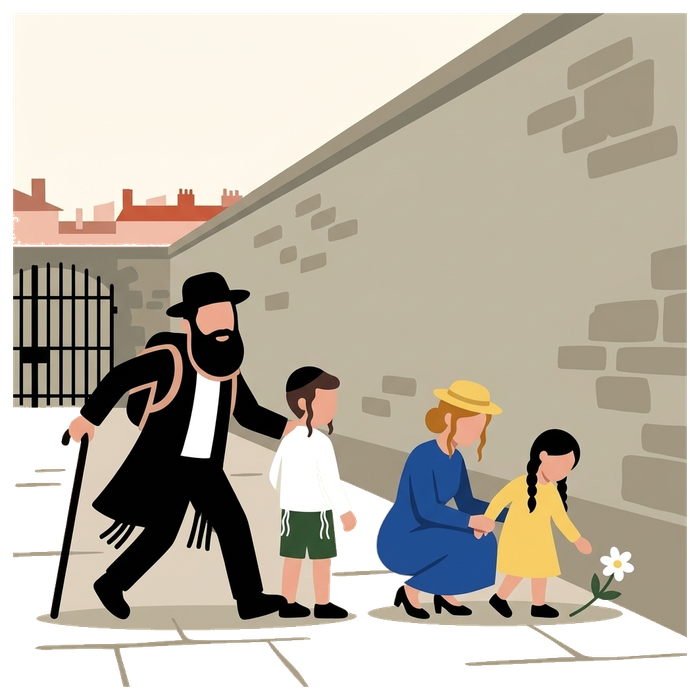
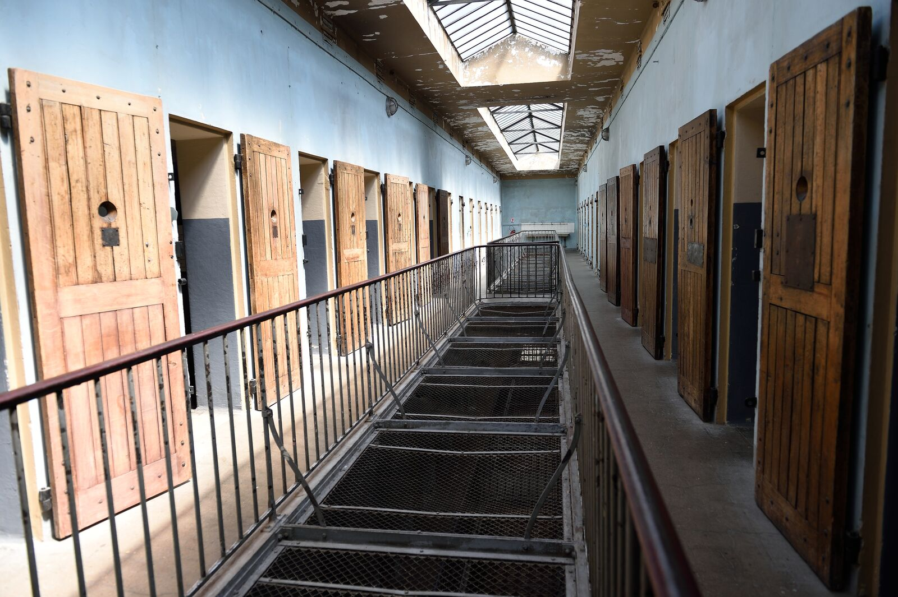
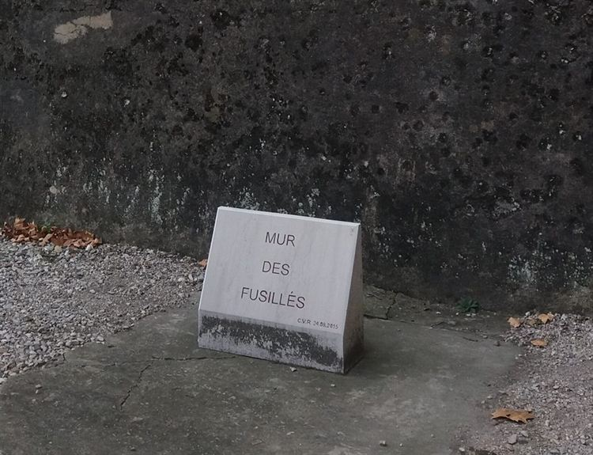
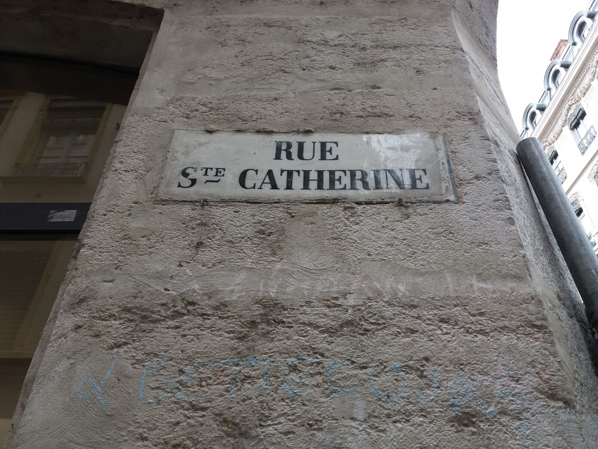
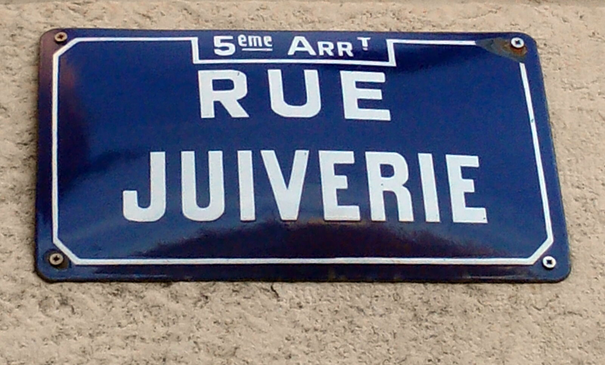

Home / Jewish Lyon guide / Montluc prison memorial
Montluc prison memorial
where the Gestapo held Jews and resistance fighters in Lyon
The Montluc prison is a national memorial in Lyon's 3rd arrondissement. From 1943 to 1944, the Germans held Resistance fighters, hostages and Jews here, many of them before deportation. The children of Izieu passed through on 6 April 1944. Entry is free.
- 4 rue Jeanne-Hachette, 69003 Lyon
- Free entry
- Metro D Sans-Souci, tram T4
- Checked 7 October 2026

History in short
Montluc was built in 1921 as a military prison. After the Germans requisitioned part of it in January 1943, they took the whole prison on 17 February 1943 and kept it until the liberation of Lyon on 24 August 1944.
- Who was held. More than 9,000 men, women and children passed through in that time: Resistance fighters, hostages and Jews. Jean Moulin and the historian Marc Bloch were held here.
- The Jews of Montluc. The prison served as a gathering point for Jews before they were sent to Drancy and then to Auschwitz-Birkenau. A separate block, known as the baraque aux Juifs, held mainly Jewish men over 15. Whole families were brought here.
- Izieu. On 6 April 1944, the children arrested at the Maison d'Izieu were held at Montluc before their deportation.
- Executions. Some prisoners were shot in the prison itself, on the walkway, at a spot now called the mur des fusillés. Others were taken out of Lyon and shot elsewhere.
The prison closed in 2009 and opened to the public as a national memorial in 2010.




The visit
You walk through the cell building, where about sixty cells present the biographies of prisoners, then through the exercise courtyards and the guards' path around the prison. The exhibition Les Traces follows the marks left by time and by the prisoners between January 1943 and August 1944.
- Cost. Entry and the guided tours are free.
- Hours. The current season's hours are not published on the sources we could reach. The last published hours were Wednesday to Friday 14:00 to 18:00 and Saturday 10:00 to 12:30 and 14:00 to 18:00, with a guided tour at 16:00, and in July and August Tuesday to Saturday. Call before you plan.
- Closed. Public holidays, and from 25 December to 2 January.
- Booking. Groups reserve by phone on 04 78 53 60 41.
- Access. Metro D to Sans-Souci, or tram T4 to Manufacture-Montluc. The ground floor and the outdoor areas are accessible to people with reduced mobility.
Montluc and the synagogue nearby 3
- Mémorial national de la prison de Montluc Free entry. Current hours: not published, last known hours above.4 rue Jeanne-Hachette, 69003 LyonMap
- Neveh Chalom synagogue Sephardi rite. Built in 1974 to 1977 by the architect Michel Marin. Interior visits by agreement with the community.317 rue Duguesclin, 69007 LyonMap
- Institut culturel du judaïsme Same address as Neveh Chalom. Films, exhibitions and objects on Jewish history and traditions. Opening hours: not published.317 rue Duguesclin, 69007 LyonMap
Sources: memorial-montluc.fr pages as listed by search (official site unreachable on 7 October 2026), cheminsdememoire.gouv.fr, auvergnerhonealpes-tourisme.com, nevehchalom.fr, jguideeurope.org.
On the map
2 places on the map, less than a kilometre apart by our measure. Tap a marker for the address and directions.
From memory to living Jewish life
Neveh Chalom and the Institut culturel du judaïsme stand at the same address, 317 rue Duguesclin. The synagogue is the second one your guide takes you inside, with the Grande Synagogue on quai Tilsitt. Interior visits depend on an agreement with the community and on the day's security, and we ask on your behalf.
We show no photo of Neveh Chalom on this site. Your guide shows it to you on the spot. Our Memory tour: Montluc and Neveh Shalom puts the memorial and the synagogue in one walk, about 2 hours 30. We never combine it with the CHRD on the same day.
Questions we get
Can we do Montluc and the CHRD on the same day?
No. We book them as two separate visits on two different days. Each one carries enough history and weight on its own.
Is the Montluc memorial free?
Yes. Entry and the guided tours are free. Our private guiding is a separate service, priced on our tour page.
Do we need to book?
Individual visitors need no booking for the memorial's own free guided tour, as listed on its site. Groups reserve by phone on 04 78 53 60 41. If you come with us, we handle the booking.
Can we go inside Neveh Chalom?
By agreement with the community, and subject to the day's security. We ask for you and confirm before you travel. Opening hours for visitors are not published.
How do we get there?
Metro D to Sans-Souci, or tram T4 to Manufacture-Montluc. Neveh Chalom, 317 rue Duguesclin, is less than a kilometre away.
Want to visit Montluc and Neveh Chalom with a guide?
Ask on WhatsAppSame-day reply, never on Shabbat.
Keep reading
Sources: memorial-montluc.fr and cheminsdememoire.gouv.fr (history, visit), auvergnerhonealpes-tourisme.com (access, execution wall), fr.wikipedia.org (dates), nevehchalom.fr and jguideeurope.org (synagogue and institute). Compiled by Mishpacha Tours from these sources. Checked 7 October 2026.